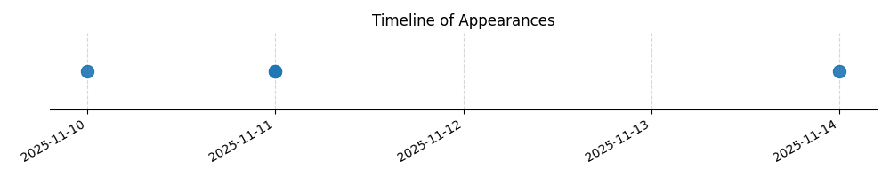

Kategorie: Letecké předpisy
Horizontálně umístěný lomený šíp nápadné barvy na návěstní ploše, na konci dráhy nebo na pásu informuje o povinnosti provádět zatáčky v určeném směru. V tomto případě šíp směřující doprava znamená, že zatáčky musí být prováděny vpravo.

| Datum výskytu |
|---|
| 2025-11-14 |
| 2025-11-11 |
| 2025-11-10 |